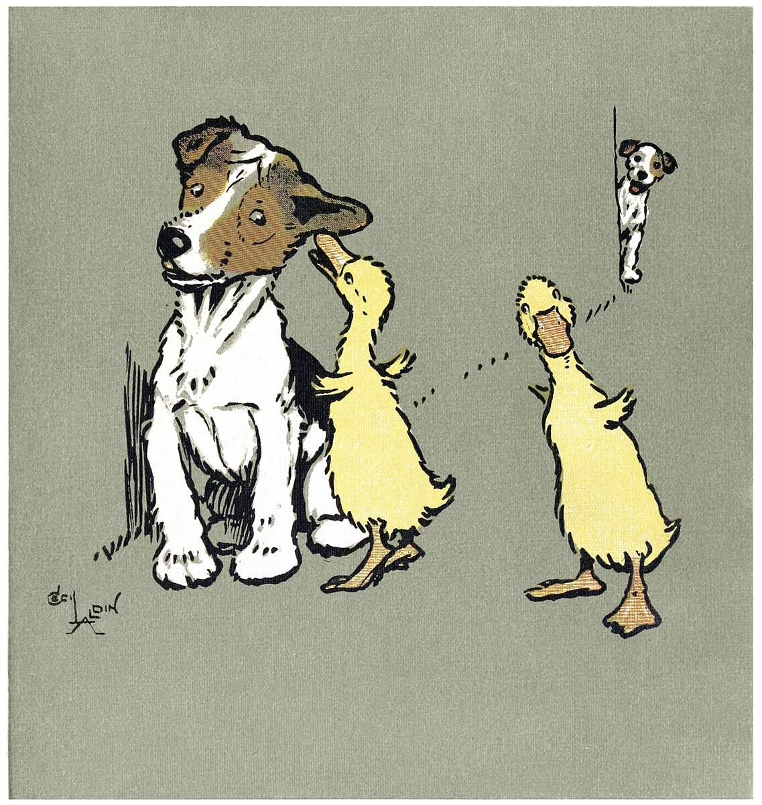

Hizkuntzaren Didaktika (2024) Haur Hezkuntza V0.4
2024-09-15
Aurretikoak

Hizkuntzaren Didaktika eta Atzerriko Hizkuntza ikasgaiko lehenengo zatiko apunteak daude hemen, Hizkuntzaren Didaktikako zatikoak, hain zuzen.
Hamar astean zehar antolatzen dira ikasgai honetako eskolak, honela 2023 urtean, ahaleginez:
- astea: Aurkezpen eguna *
- astea: Zer da Hizkuntza | Hizkuntzalaritza
- astea: Hizkuntzalaritza
- astea: Nola ikasten du umeak hizketan | Proiektuaren aurkezpena
- astea: Hizkuntza patologiak
- astea: Hizkuntza patologiak | Ahozko hizkuntza haur hezkuntzan
- astea: Ahozko hizkuntza haur hezkuntzan
- astea: Ahozko hizkuntza haur hezkuntzan
- astea: Murgiltze klaseak
- astea: Aurkezpenak eta azterketarako azken prestaketak
Hobeto eta sakonago irakur dezakezu hemen.
Jakin beza hona iritsitako nabigatzaileak apunteok ez direla egile honek egindakoak, baizik eta hainbaten lanetatik aurtengo ikasleentzat sortutako gunea. Batez ere Asier Romeroren, Karlaren eta Lorea Unamunoren lanetatik edan dute apunteok.